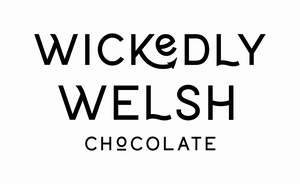

Trade Mark Journal No.2025/014 4 April 2025
UK00004175504 18 March 2025 (30)

- Class 30
- Chocolate; Chocolate truffles; Chocolate fudge; Chocolate brownies; Chocolate marzipan; Chocolate sweets; Chocolate confectionery; Chocolate candies; Chocolate confectionary; Chocolate cake; Chocolate caramel wafers; Chocolate coffee; Milk chocolate; Chocolate biscuits; Chocolate confections; Chocolate desserts; Chocolate fondue; Chocolate cakes; Dairy-free chocolate; Chocolate waffles; Chocolate pastries; Chocolate syrup; Milk chocolate teacakes; Chocolate wafers; Chocolate chips; Milk chocolate bars; Dairy chocolate; Chocolate flavoured confectionery; Chocolate bunnies; Chocolate bars; Chocolate creams; Chocolate sauce; Hot chocolate; Mousses (Chocolate -); Chocolate mousses; Chocolate for confectionery and bread; Chocolate eggs; Chocolate syrups; Shortbread with a chocolate coating; Chocolate beverages; Chocolate powder; Chocolate flavourings; Chocolate vermicelli; Chocolate coated biscuits; Chocolate candy with fillings; Chocolate sauces; Deep chocolate cake made with chocolate sponge; Drinking chocolate; Chocolate coating; Chocolate for toppings; Chocolate covered biscuits; Chocolate confectionery having a praline flavour; Chocolate coated nougat bars; Shortbread with a chocolate flavoured coating; Chocolate confectionery containing pralines; Pralines made of chocolate; Chocolate topping; Chocolate with alcohol; Chocolate beverages with milk; Vegan hot chocolate; Almonds covered in chocolate; Chocolate coated marshmallow biscuits containing toffee; Drinks flavoured with chocolate; Chocolate drink preparations flavoured with toffee; Chocolate topped pretzels; Chocolate covered pretzels; Chocolate covered cakes; Chocolate flavoured beverages; Waffles with a chocolate coating; Chocolate drink preparations flavoured with mocha; Aerated chocolate; Non-medicated chocolate confectionery; Candy with cocoa; Chocolate shells; Chocolate covered wafer biscuits; Ice creams flavoured with chocolate; Chocolate flavoured coatings; Chocolate coated fruits; Chocolate coated nuts; Filled chocolate; Imitation chocolate; Chocolate confectionery products; Confectionery chocolate products; Aerated drinks [with coffee, cocoa or chocolate base]; Non-medicated chocolate; Sweets (Non-medicated -) in the nature of chocolate eclairs; Substitutes (Chocolate -); Chocolate syrups for the preparation of chocolate based beverages; Milk chocolates; Chocolates; Chocolate pastes; Aerated beverages [with coffee, cocoa or chocolate base]; Chocolate drink preparations flavoured with banana; Shortbread part coated with chocolate; Confectionery items coated with chocolate; Chocolate coated macadamia nuts; Chocolate extracts; Chocolate spread; Chocolate spreads; Chocolate drink preparations flavoured with nuts; Chocolate drink preparations flavoured with mint; Biscuits having a chocolate flavoured coating; Hot chocolate mixes; Liqueur chocolates; Chocolate decorations for cakes; Chocolate drink preparations flavoured with orange; Biscuits having a chocolate coating; Non-medicated flour confectionery coated with chocolate; Chocolate-coated sugar confectionery; Beverages with a chocolate base; Filled chocolate bars; Half covered chocolate biscuits; Truffles (rum -) [confectionery]; Chocolate drink preparations; Candy with caramel; Cocoa; Ice beverages with a chocolate base; Beverages made with chocolate; Beverages made from chocolate; Chocolate beverages containing milk; Drinks containing chocolate; Truffles [confectionery]; Chocolate based drinks; Ice creams containing chocolate; Shortbread part coated with a chocolate flavoured coating; Turkish delight coated in chocolate; Biscuits containing chocolate flavoured ingredients; Non-medicated flour confectionery coated with imitation chocolate; Marshmallow filled chocolates; Chocolates in the form of pralines; Chocolate decorations for confectionery items; Almond confectionery; Drinks prepared from chocolate; Non-medicated confectionery containing chocolate; Beverages containing chocolate; Confectionery items formed from chocolate; Chocolate with Japanese horseradish; Caramel.
Wickedly Welsh Chocolate Company Ltd